2026-10-16 · 本机开发分支 vue-java-cys
前端已迁移到 Vue 3 + TypeScript + Vite。公共标题、横向列表、编辑窗口、确认框、材料与题目组件复用。后端沿用 FastAPI，部署参数集中在独立的 app/config.json。应用版本保持原值，没有提交或推送。
打开本机页面 · 启动与配置说明 · 检查结果数据 · 浏览器检查证据 · 改造前审查
| 区域 | 实现与布局变化 |
|---|---|
| 课程与课次 | 课程摘要、课程工具、课次列表分区。课次以横向条目呈现，打开、修改、删除直接显示；新增位于列表上方。初次加载不再误显示“没有课次”。 |
| 教学设置 | 教学设置、题目、材料、学生作业四个入口。预览按需打开；保存草稿与发布保持独立。非设置页减少重复的说明和无操作意义的保存按钮。 |
| 题目管理 | 列表优先；同一编辑窗处理新增与修改，搜索、分组、题型筛选集中。手机第一道题从纵坐标约 929 px 提前到约 699 px，保留直接操作。没有题目时隐藏无用的筛选区。 |
| 弹窗与导航 | 取消未保存内容使用站内提示。手机编辑窗固定底部操作区，短确认框居中紧凑显示，实测约 272 px 高。抽屉提供明确的关闭按钮，退出登录后重置。 |
| 材料与导入 | 预览、修改、移除直接列出；上传与复用集中在顶部。教师答案材料固定为私有。无可关联材料、无已审阅题目时不能提交；原材料可直接用于非 AI 文本提取。 |
| 人员与版本 | 课程人员和平台账户共用人员管理组件，嵌入设置页时不重复一级标题。版本差异改用课次、题号和字段名称，减少内部路径与 JSON 的干扰。 |
| 学生学习 | 对话、作答、材料分区，手机标签页同排显示；作答统一使用编辑窗口。保存结果可刷新回读，历史记录保留课程版本。 |
| 配置 | 地址、端口、存储、认证、模型、搜索、文档工作器参数集中在 config.json；设置页只显示部署状态。Qwen 接口、模型名和密钥仍待填写。 |
| 检查 | 真实结果 |
|---|---|
| 构建与代码检查 | 最终 Vue 模板／TypeScript 类型检查及 Vite 构建通过；修改文件的 Prettier 检查、Git 空白检查通过。 |
| 自动测试 | 前端 6 文件共 35 项通过；最终题目组件改动后单独复测 5 项通过（属于前述 35 项，不重复计数）。配置测试 9 项通过，存在 1 条既有 Starlette/httpx 弃用提示。 |
| 视口 | 1366×768、1440×900、768×1024、390×844。记录的最终题目页面文档宽度均未超过视口；最终页面的浏览器日志未记录警告或错误。 |
| 真实交互 | 题目新增／修改保存（第一轮）、搜索与题型筛选、继续编辑／放弃修改、取消删除、材料预览与复用空状态、非 AI 导入空结果保护、预览返回、角色筛选、版本对比、学生回答保存并刷新回读、教师读取回答、学习历史和手机导航均已操作。 |
| 本机运行 | health 返回 ok，服务监听 127.0.0.1:18773。当前 AI 未配置，没有发起模型、搜索或外部工作器请求。 |
| 演示数据 | 临时新增的测试题已移除并回读，课次保留 6 题。本轮在合成学生 Demo Student 1 中保存了 1 道选择题回答，作为可查看的演示记录；原有真实课堂数据未迁移或清空。 |
全部图片来自真实本机浏览器。下列优先展示修正后的页面；完整记录保留了必要的修改前画面，不能把早期截图当作最终界面。
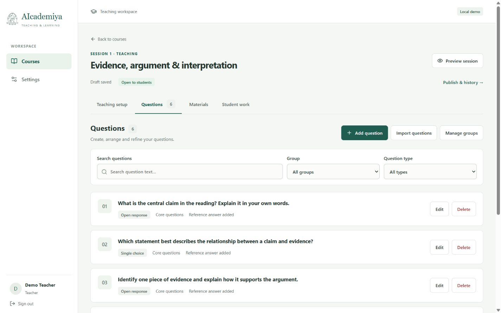
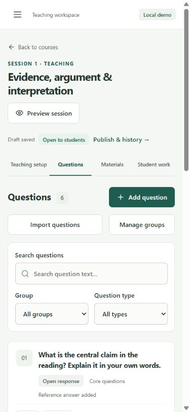
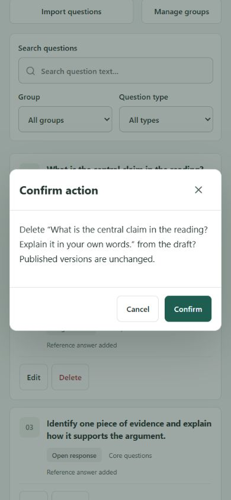
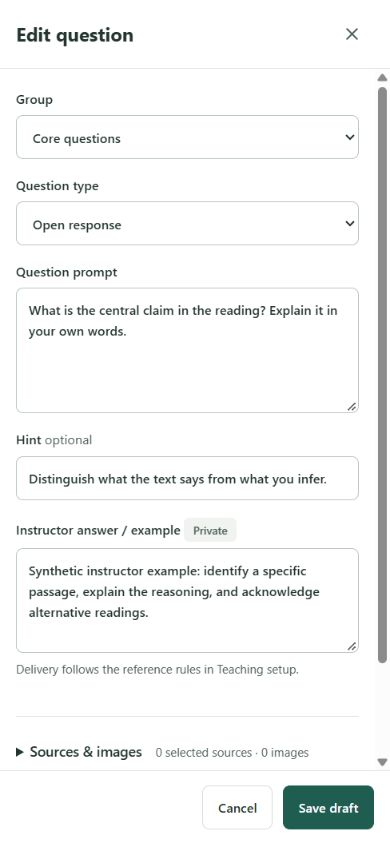
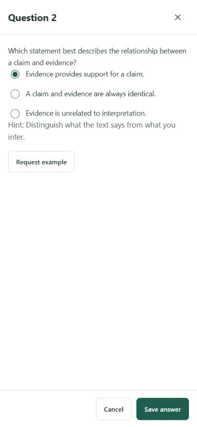
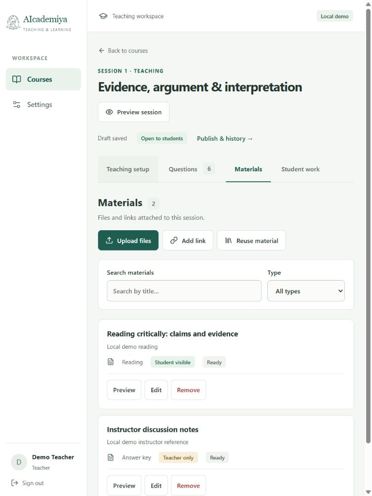
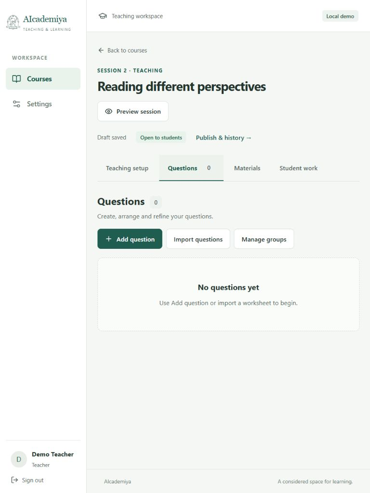
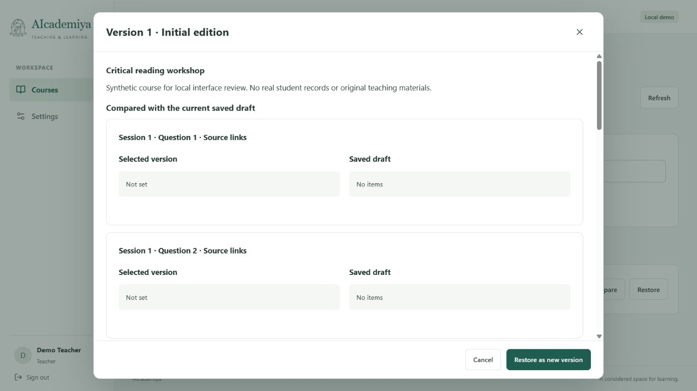
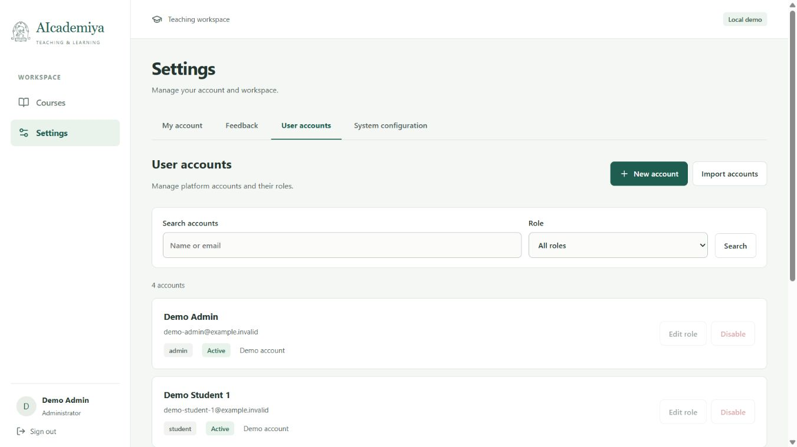
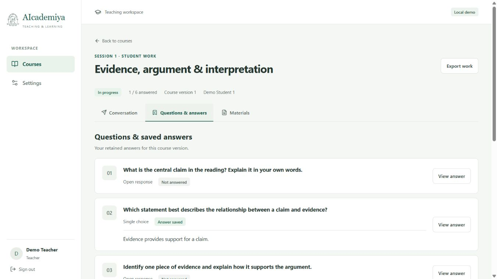
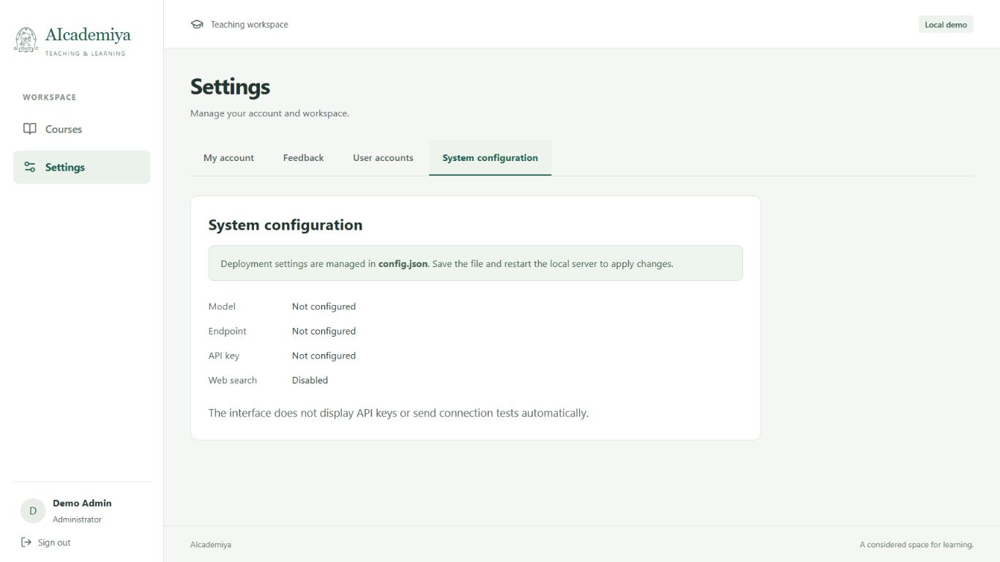
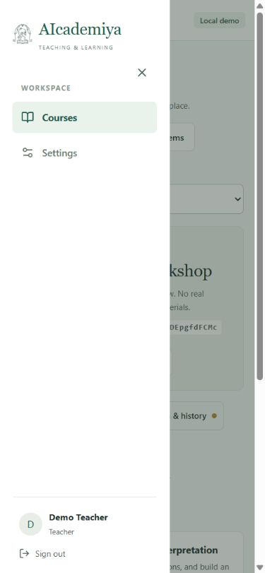
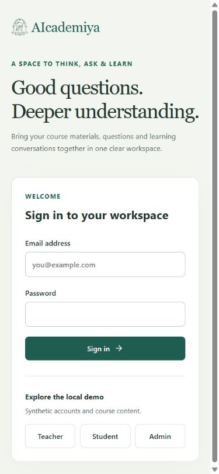
旧 React 专属源码及测试、临时工作目录、缓存、无用过渡截图、提取产生的空目录和本次 npm 日志均移入 C:\Users\user\Desktop\智能体回收站\垃圾桶\zzm-vue-java-cys-20261016；没有永久删除。项目环境、构建产物、演示数据、正式截图及报告保留。开发分支仍为 vue-java-cys，没有提交、推送或远程部署。
下一步可直接打开本机页面手动验证；取得百炼 API Key 后，再填写 config.json 中的模型配置。